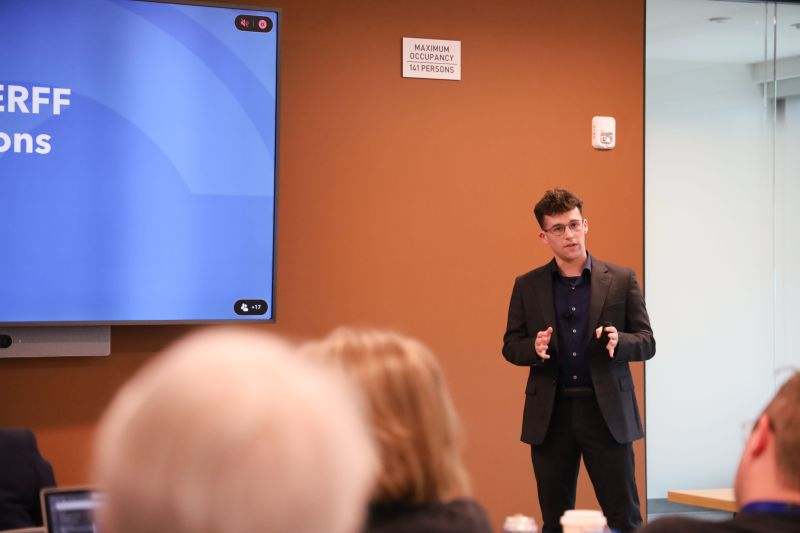

Truman State University Junior Computer Science & Data Science Student
Experience
National Association of Insurance Commissioners (NAIC) - Data Scientist Intern
Developed and deployed a predictive machine learning model for insurance filing complexity, becoming the first intern to deploy an ML model within NAIC’s database.
Built a data pipeline, engineered features, and tuned XGBoost models to achieve high predictive accuracy for Missouri filings.
Collaborated with stakeholders to align modeling goals with business needs.
Utilized Python to develop and validate models, translating complex data insights into actionable recommendations.

Health Sciences Department, Truman State University - Research Assistant
Collected data from freshmen, juniors, and faculty for health sciences research.
Applied predictive machine learning techniques to analyze data.
Used Python, R, and PowerBI for data visualization to identify trends.
Presented findings at the 38th annual Student Research Conference at Truman State University.